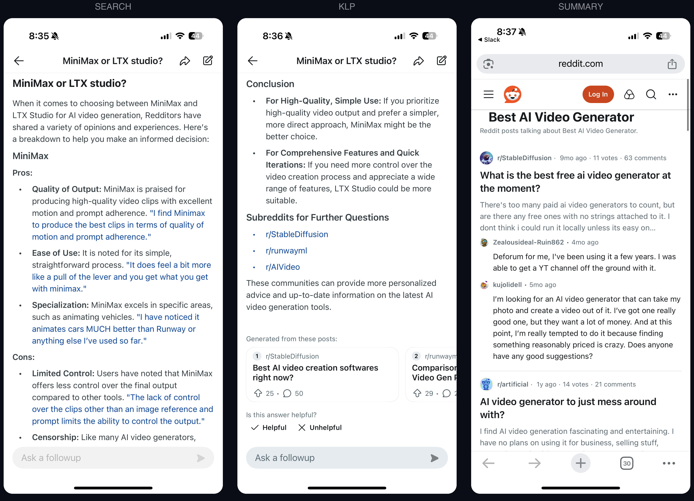
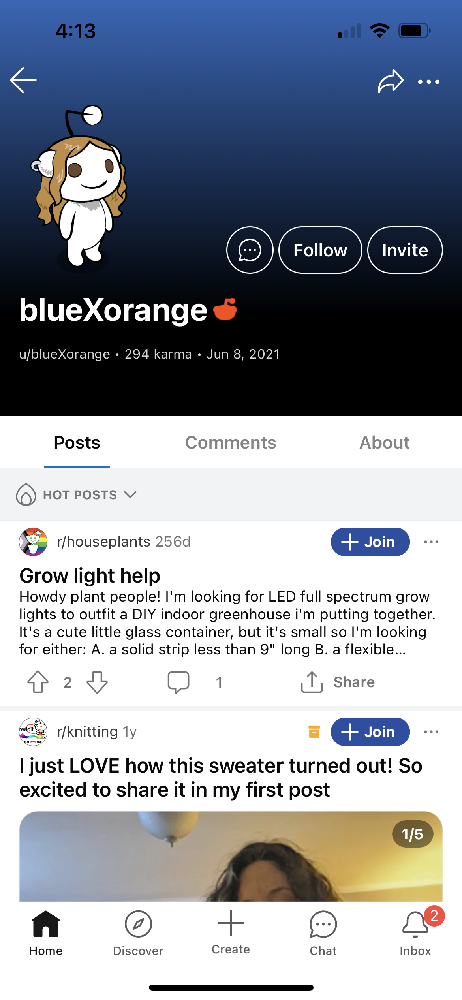
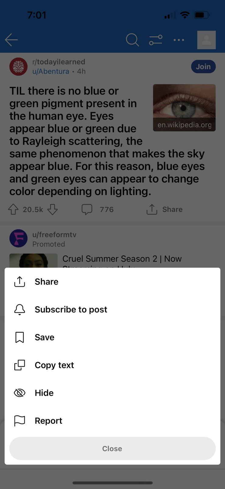
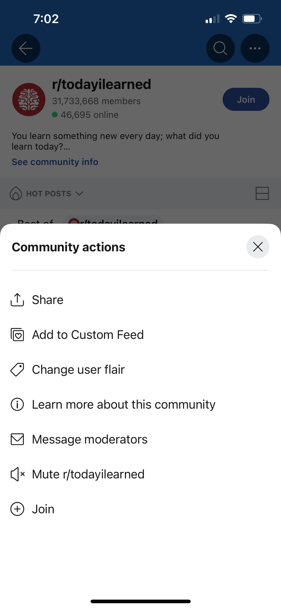
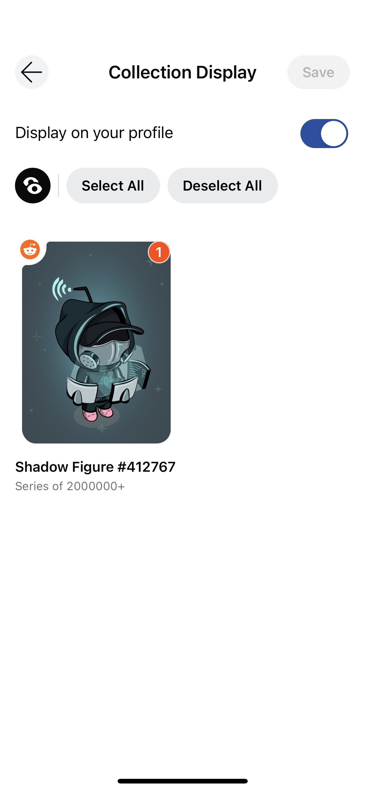
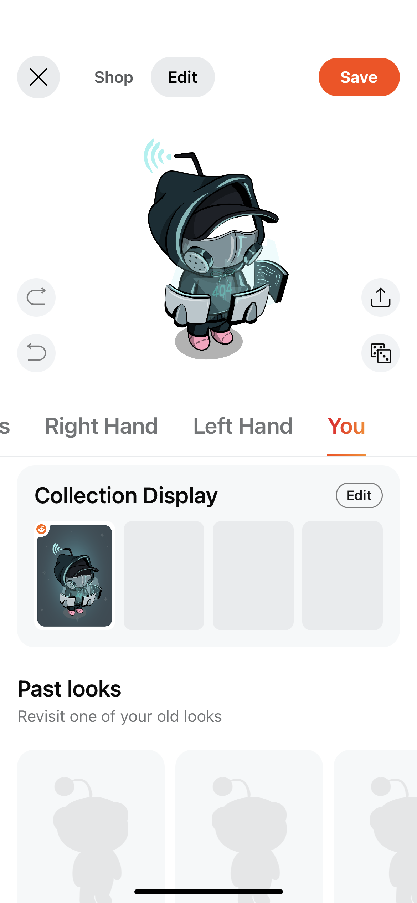

Reddit Answers MVP
Challenge
Reddit content was hard to find. Answers to a single question lived across multiple posts and communities, and users hitting those pages from search had no way to piece them together. Most bounced.
SEO was where the majority of new users entered Reddit — and where most of them left.
Solution
I designed an LLM-powered summary that synthesized content across posts and communities into a single entry point aligned with the user's search intent. Instead of letting new users bounce, we caught them at the door and pulled them deeper into the platform.
The long bet: shift the mental model from appending reddit to a Google search toward searching Reddit directly.

Identity
Reddit had no precedent for AI-generated content. No identity system, no evaluation criteria, no framework for non-deterministic output. I partnered with brand, legal, and design systems to define what AI content would be at Reddit.

Transparency was the design constraint. User research confirmed people valued knowing content was AI-generated, but this was peak AI backlash. The signal had to build trust without feeling like a trend.

Developing the UI
Working with design systems and brand, I explored the full spectrum of identification patterns — and tested them across surfaces well beyond the initial product.

The component library, identification patterns, and feedback UI shipped as reusable system components — built to scale to wherever AI content appeared next.
Voice
The closer summaries stayed to original posts, the more users trusted them. Broad generalizations — a consistent failure mode in early outputs — killed trust immediately.
I drove the team through the harder question: how to synthesize across communities without losing the source. Every summary needed direct attribution and links so users could go deeper.
The synthesis display patterns and truncation logic became reusable across later products.
Prompt Design Workflow
Previously, prompt iteration was one engineer, vibes-based. The feedback loop was gut reactions with no shared criteria — and I had to turn that into something the team could operate against.

I introduced a structured evaluation matrix — multiple prompts tested simultaneously against live data, scored on defined parameters: summary quality, source relevance, synthesis depth, transparency, community diversity.

I partnered with content design to define the evaluation dimensions, then facilitated scoring sessions where our cross-functional team rated outputs against the rubric directly. No external raters — we were the evaluators. The rubric had to be precise enough for non-designers to apply consistently.
Value
The question we kept returning to: how do we know we're bringing users value, not just serving SEO? Search ranking rewarded keyword density and repetition — exactly the patterns that made summaries feel mechanical to readers.
I worked with the engineer to separate those concerns: keywords were embedded in structured page elements outside the summary itself, so the synthesis could stay natural while the page still ranked. That separation became a core principle.
Failure States
Below-threshold quality meant the summary didn't appear — rather than showing users something unreliable. Users could flag responses, suggest improvements, or collapse the summary entirely.
User Control
Those signals fed directly back into model iteration. Flagged outputs surfaced where the model was weakest, and the rubric evolved to reflect what users actually valued versus what we'd assumed.
We started with the verticals that had the strongest source coverage and used real usage data alongside our content team to refine over time.
Results
This project shipped to every user reaching Reddit through Google search for targeted verticals — a surface handling hundreds of millions of monthly visits.
The governance model, identity system, and prompt workflow I built were handed to a new team spun up to bring synthesis into search — where research had shown it belonged.
Reddit Answers launched on top of the systems I built — the LLM identification library, synthesis patterns, feedback UI, evaluation rubric, and governance framework were inherited directly.